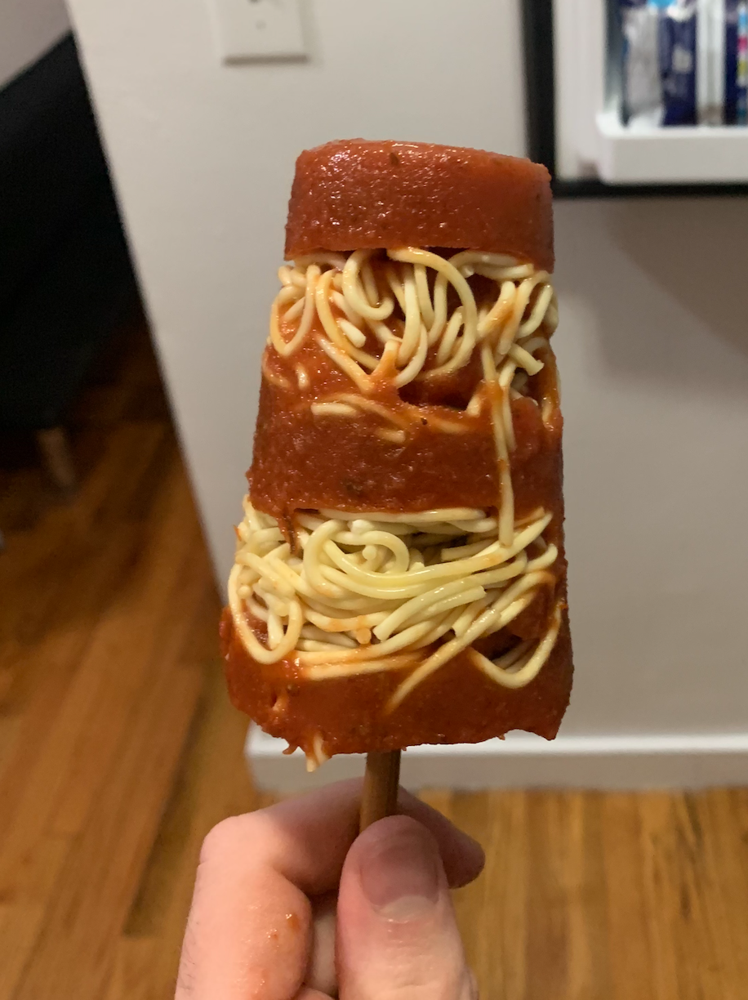

Spaghetti Popsicle

Description
This recipe goes into detail on how to make the most refreshing and delicious spaghetti popsicle
that can be enjoyed by everyone on a hot summer day.
Some people may wonder why, the rhetorical answer is: why not?
Ingredients
- pasta of choice. This recipe will use Spaghetti-O pasta noodles
- Cooking oil
- 1 pound of ground beef
- 1 medium onion, chopped
- 4 cloves of garlic, diced
- Store bought or made-from-scratch spaghetti sauce
- Popsicle mold
Steps
- Boil water in a pot. Add noodles to pot once the water is boiling.
Boil noodles until al dente. The noodles should be soft, yet still has a chew.
- Heat up saucepan. Add cooking oil and diced garlic.
Then mix in the chopped onion and ground beef. Cook and stir until
the meat is browned. Drain the grease (optional).
- Mix in the spaghetti sauce and stir. Season with salt and pepper to taste.
- Combine sauce with noodles and give a final stir.
- Let the final product cool for 30 minutes, then pour into popsicle mold.
Put the popsicle mold into the freezer and wait a 4 hours and 20 minutes.
- Eat.